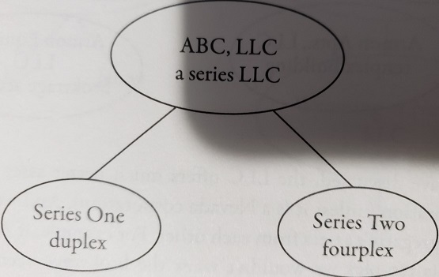

The series LLC is supposedly designed so that by setting up and paying the fees on one asset-protected LLC you can protect a number of properties in a separate series within the one LLC. A graphic example follows:

The supposed benefit is that if there is a claim against the duplex in Series One a creditor could not reach the fourplex in Series Two. It is in a separate asset-protected series the promoters will claim, and therefore can't be reached.
There are several problems with the series LLC. The first is, conceptually it doesn't make sense. If you form one entity and it is sued, all of the assets within that entity are exposed - whether they are in a separate series or not. Significantly, there is not one court case extending asset protection to assets held in a separate series. I personally do not want to put my assets into an entity and hope for the best in a future court ruling.
By using separate LLCs we have the certainty that assets in a remote LLC will not be exposed to claims brought against a target LLC. The series LLC does not offer such certainty.
The series LLC has been sold as a state-free-savings device. By using series LLC holding, for example, four assets, it is claimed that you only have to pay one filing fee instead of the four fees for the four separate LLCs. That argument worked until the state of California decided that each series would be taxed as a separate LLC. So instead of paying just $800 for one series LLC in California you would pay, in our four-asset example, $3,200 for the series - the same as if you would used four separate LLCs with greater certainty of protection. While not every state is as aggressive a tax collector as California, you can be certain that some will follow suit and charge a filing fee per series.
There are other issues surrounding the various unknowns posed by the series LLC. Will the supposed "internal liability shield" of the series LLC be respected in states that do not series provisions? No one knows. In a bankruptcy of one series would the court consolidate all of the various series into the parent? No one knows. But you can ve certain that by forming separate LLCs you will not face such sleep-loosing unknowns.